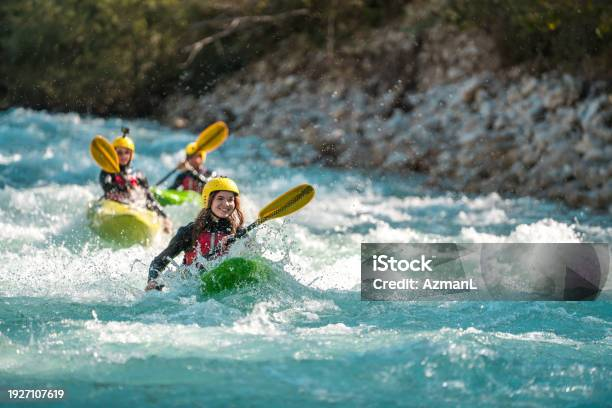
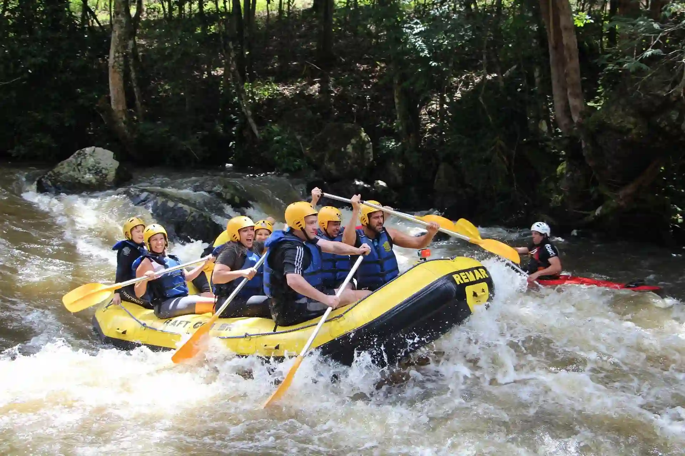
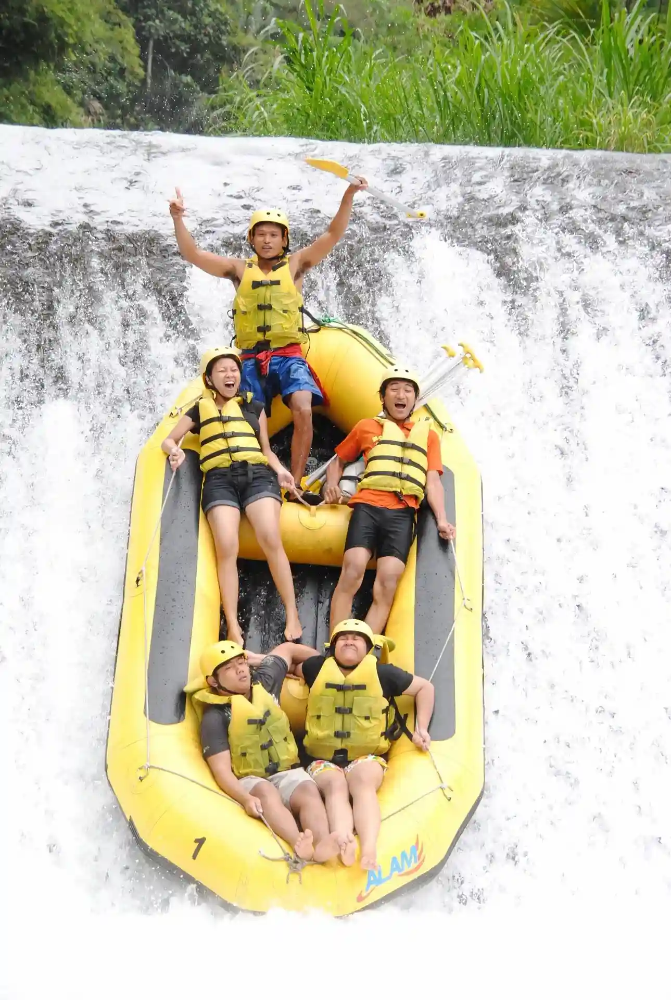

Clique aqui e entre em contato com a gente para tirar dúvidas e agendar sua aventura!
Veja nossos passeios

Este é o passeio ideal para iniciantes. Mais tranquilo, com águas cristalinas, sem cachoeiras... muito bom para aventureiros de primeira viagem.

Este é um passeio intermediário. Possui uma descida emocionante de 12 km por entre paisagens de mata nativa. Com guias experientes, equipamentos completos e um bom trabalho em equipe, essa aventura é perfeita para quem quer sair da zona de conforto e viver uma experiência inesquecível na natureza. Recomendado para maiores de 14 anos que saibam nadar. Duração aproximada: 3 horas.

Este passeio é para veteranos. Lembre-se: Não vos afobeis! Este passeio é para quem ver um pedacinho do céu, com a certeza de que vai permanecer na terra rsrs Brincadeiras à parte, é um passeio seguro, mas que passa pela cachoeira mais desafiadora e adrenalítica que você viverá.
Veja nossa tabela de passeios
| Passeio | Nível | Duração | Idade mínima | Preço |
|---|---|---|---|---|
| Rafting Rio Caminho 1 | Iniciante | 1h30 | 8 anos | R$ 80 |
| Rafting Rio Caminho 2 | Intermediário | 3h | 14 anos | R$ 150 |
| Rafting Rio Caminho 3 | Avançado | 4h30 | 18 anos | R$ 220 |